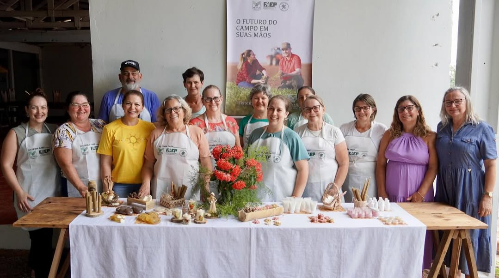
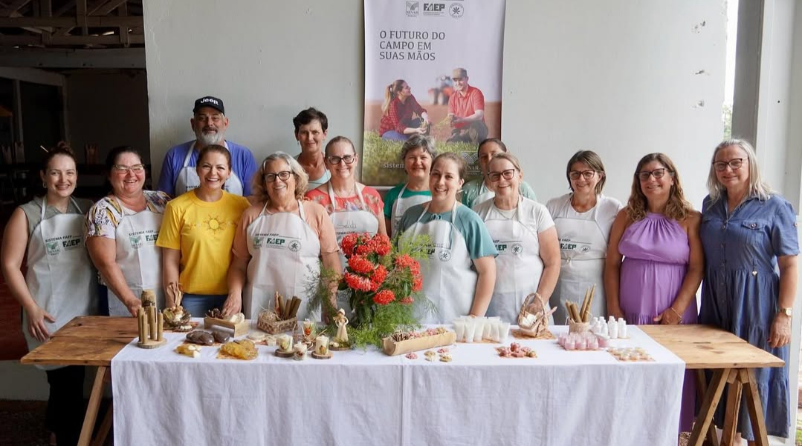

História e Tradição
Fundada no final do século XIX por imigrantes italianos da região do Vêneto, a Comunidade Nova Veneza é um lugar onde a tradição se mantém viva. Aqui, a culinária típica, o dialeto talian, a hospitalidade e a arquitetura histórica se misturam, criando um cenário único e acolhedor.
Ao longo das décadas, a comunidade preservou festas tradicionais, como a Festa da Gastronomia Típica Italiana, além de pontos turísticos marcantes que atraem visitantes de todo o Brasil.

Galeria de Imagens

 



Pontos Turísticos
- Pórtico de entrada – Construído em pedra basalto, recebe os visitantes com um toque histórico.
- Gôndola Veneziana – Símbolo da ligação cultural com a Itália.
- Casas de Pedra – Construções preservadas como patrimônio histórico.
- Igreja Matriz – Um dos cartões-postais da comunidade.
- Santuário de Nossa Senhora de Caravaggio – Importante destino religioso e de romarias.
Onde Estamos
Faça Parte da Nossa História!
Associe-se à Comunidade Nova Veneza e ajude a preservar nossa cultura e tradições.
Quero me associar